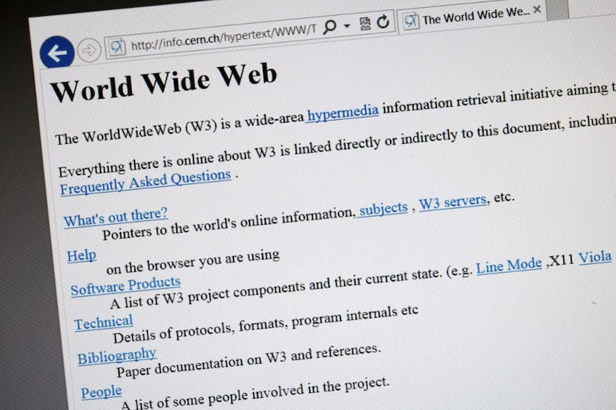
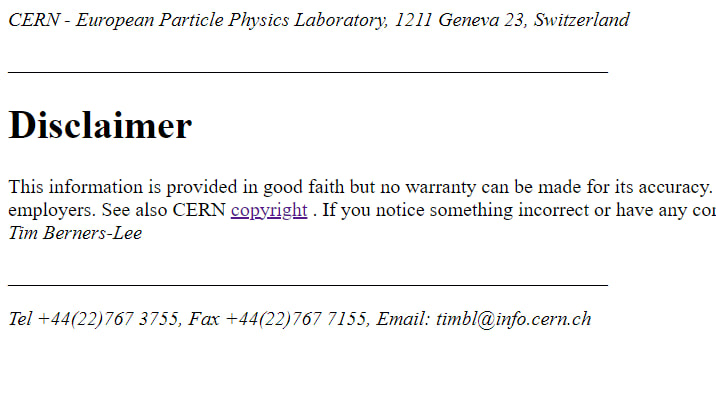

Первый в мире сайт
Как выглядит первый в мире веб-сайт. Он все еще работает?
Первый сайт, известный как World Wide Web (WWW), был создан в 1991 году Тимом Бернерсом-Ли в ЦЕРНе (Европейская организация по ядерным исследованиям) в Женеве, Швейцария. Этот сайт был разработан для обмена информацией между учеными и исследователями, работающими в разных университетах и научных институтах по всему миру.
Первый сайт был простым веб-приложением, состоящим из нескольких страниц с гиперссылками, которые позволяли пользователям перемещаться по различным разделам информации. Он содержал базовую информацию о проекте WWW, инструкции по его использованию и ссылки на другие ресурсы.
Одной из основных особенностей первого сайта было использование гипертекстовой системы, которая позволяла пользователям создавать и переходить по гиперссылкам. Это позволило ученым легко обмениваться информацией и получать доступ к различным ресурсам в Интернете.
Первый сайт также содержал некоторые элементы интерактивности, такие как формы для отправки сообщений и запросов. Хотя эти функции были простыми по сравнению с современными сайтами, они представляли собой важный шаг в развитии интерактивности и коммуникации в онлайн-среде.
С течением времени первый сайт стал отправной точкой для развития Интернета и его коммерциализации. Он стал прародителем для миллионов сайтов, которые мы видим сегодня, и имеет огромное значение в истории развития веб-технологий.
Сейчас можно просмотреть исходный код проекта World Wide Web. По ссылке вы увидите текст о Всемирной сети, содержащий гиперссылки.